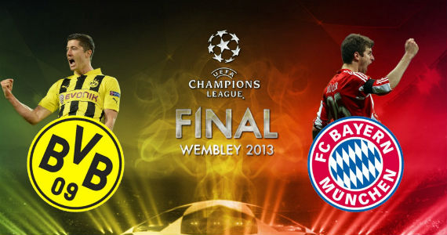

Curiosidades
O clube que mais vezes conquistou o torneio
O Real Madrid Club de Fútbol, é o primeiro dos maiores campeões da Champions League pelos seus 14 títulos conquistados nas temporadas de 1955–56, 1956–57, 1957–58, 1958–59, 1959–60, 1965–66, 1997–98, 1999–00, 2001–02, 2013–14, 2015–16, 2016–17, 2017–18 e 2021-2022, sendo vice em 1961–62, 1963–64 e 1980–81. Em 2004 o Real Madrid recebeu a Ordem de Mérito da FIFA, a maior honraria da entidade normalmente dado a pessoas, por ter contribuído significativamente com o futebol.
Primeira edição conquistada pelo Real Madrid
A maior virada da Uefa Champions League
Talvez a maior e mais improvável virada já vista em Champions League. Na ida, no Parque dos Príncipes, vitória gigante do PSG por 4 a 0. Era uma missão quase impossível para o Barcelona, que saiu de Paris abalado com a derrota. Na volta, os espanhóis conseguiriam 3 a 0 no comecinho do segundo tempo. Porém Cavani complicaria a vida do time catalão mais uma vez ao diminuir, fazendo os adversários precisarem de três gols para se classificar. O inesperado aconteceu. O Barça conseguiu 3 gols a partir dos 43 do segundo tempo, entrando para história como a virada mais inesperada já vista na competição.
O gol que garantiu a classificação do Barcelona
A partida que causou um terremoto
Um sismógrafo instalado no Instituto de Ciências da Terra Jaume Almera, que fica a cerca de 500 metros do Camp Nou(estádio do Bracelona), registrou um pequeno tremor no local depois do gol marcado por Sergi Roberto, na vitória por 6 a 1 (a mesma partida do tópico anterior) que garantiu o Barça nas quartas de final da Liga dos Campeões da Europa.
Em entrevista ao jornal “El País”, o sismólogo George Diaz disse que o pulo e a vibração das quase 100 mil pessoas que estavam no Camp Nou gerou um tremor maior que o comum em jogos de futebol.
Cada gol refletido no sismograma
A partida que mais teve audiência na história da Uefa Champions League
A final de 2013, uma partida extremamente decisiva entre Bayern München (2) e Borussia Dortmund (1), foi a que atraiu maior audiência, com 360 milhões de telespectadores que acompanharam a partida.

Final da Champions League em 2013
Estatísticas por jogador
Principais goleadores
| Nome |
Último clube |
Gols Marcados |
| Cristiano Ronaldo |
Manchester United |
141 |
| Messi |
Paris |
126 |
| Lewandowski |
Barcelona |
89 |
| Benzema |
Real Madrid |
86 |
| Raúl González |
Schalke |
71 |
Principais assistentes
| Nome |
Último clube |
Mais assistências |
| Cristiano Ronaldo |
Manchester United |
42 |
| Messi |
Paris |
37 |
| Di María |
Juventus |
35 |
| Neymar |
Paris |
31 |
| Giggs |
Manchester United |
31 |
Jogadores com mais jogos
| Nome |
Último clube |
Jogos |
| Cristiano Ronaldo |
Manchester United |
187 |
| Casillas |
Porto |
181 |
| Messi |
Paris |
158 |
| Xavi |
Barcelona |
157 |
| Giggs |
Manchester United |
151 |
Estatísticas por clube
Mais títulos
| Nome |
País |
Quantidade de títulos |
| Real Madrid |
Espanha |
14 |
| Milan |
Itália |
7 |
| Liverpool |
Inglaterra |
6 |
| Bayern |
Alemanha |
6 |
| Barcelona |
Espanha |
5 |
Clubes com mais gols marcados
| Nome |
País |
Gols marcados |
| Real Madrid |
Espanha |
1026 |
| Bayern |
Alemanha |
786 |
| Barcelona |
Espanha |
660 |
| Manchester United |
Inglaterra |
533 |
| Juventus |
Itália |
472 |
Clubes com mais gols sofridos
| Nome |
País |
Gols sofridos |
| Real Madrid |
Espanha |
508 |
| Bayern |
Alemanha |
367 |
| Barcelona |
Espanha |
334 |
| Benfica |
Portugal |
322 |
| Anderlecht |
Bélgica |
320 |
Se increva para receber as novas atualizações
Nome:
E-mail:
Barcelona:
Juventus:
Real Madrid:
Tottenham:
Manchester City:
Bayern: